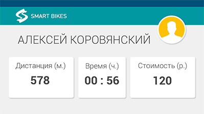

Создать качественный и удобный сервис проката велосипедов, чтобы каждый желающий мог покататься солнечным днем по красивым местам города и получить море положительных эмоций.

Создать качественный и удобный сервис проката велосипедов, чтобы каждый желающий мог покататься солнечным днем по красивым местам города и получить море положительных эмоций.
Мы выбрали название Smart Bikes потому, что мы хотим создать качественно новую и удобную для конечных пользователей систему проката велосипедов, основанную на современных мобильных и веб-технологиях.
Мы омичи, поэтому наша текущая цель — запустить прокат в Омске. На данный момент мы планируем осуществить запуск сервиса летом 2015 года. Приглашаем всех желающих принять участие в бета-тестировании нашего умного проката!
Мы планируем размещении станций проката на Иртышской Набережной, на Набережной Тухачевского, на Зеленом Острове и в Парке культуры и отдыха. Также мы открыты к вашим пожеланиям и предложениям по данному вопросу.
Да, мы планируем предоставлять такую возможность для доверенным клиентов с помощью нашего веб-сайта.
Да, после запуска проката эту информацию всегда можно будет узнать на нашем сайте.
Да, вы можете вернуть велосипед на любой из станций Smart Bikes в любое удобное для вас время.
В наших дальнейших планах есть разработка дополнительного сервиса и мобильного приложения, с помощью которых любой владелец велосипеда сможет сдавать его в аренду, а каждый желающий прокатиться будет иметь возможность кататься на чужом велосипеде, получая более высокий уровень качества за меньшую стоимость в сравнении с классическими велопрокатами.
В нашем прокате вы сможете найти современные вело-бренды, такие как GT, Track, Merida и другие. Также специальные детские и женские модели. Комфорт наших пользователей для нас важнее всего!
Для того чтобы стать доверенным клиентом нужно всего лишь сделать более 5 прокатов. После этого вы получите возможность доступа в личный кабинет на сайте Smart Bikes, где вас будут ждать дополнительные услуги и специальные бонусы.
Необходимо прийти на станцию велопроката, выбрать велосипед, внести залог равный стоимости велосипеда (который будет возвращен по завершению проката) — после этого вы можете кататься сколько вам угодно, наслаждаться отдыхом и здоровым образом жизни.
Мы планируем, что одна минута проката будет стоить 1 рубль, то есть 2 часа проката вам обойдется в 120 рублей.
В наших дальнейших планах есть реализация данной возможности для доверенных пользователей.
Да!
Да! Мы будем рады получить ваш фидбэк о том, как сделать сервис простым и удобным для конечных пользователей. Также если вы хотите принять непосредственное участие в разработке и запуске сервиса, то мы будем рады пообщаться с вами — пишите на team@smart-bikes.ru или звоните +7-923-685-4321 (Алексей) .